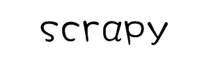
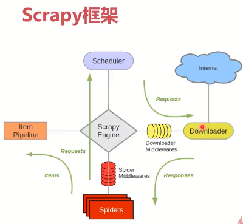

注意：python 爬虫

1.测试IP可用性(国内代理)
2.测试IP可用性2(国内代理)
3.爬取堆糖网_校花
4.爬取艺龙酒店_住宿（待完善）
5.爬取拉钩_职位
6.爬取链家_武汉租房
7.爬取链家_武汉二手房


1.scrapy安装
网络上面有多种安装方式，不过按照我这种相对比较靠谱，毕竟亲测过的(pip install scrapy会安装失败，调试比较复杂，不建议)
1)下载地址：https://www.lfd.uci.edu/~gohlke/pythonlibs/
搜索scrapy(当前谷歌快捷键ctrl+f),下载Scrapy‑1.5.1‑py2.py3‑none‑any.whl
2)安装pip install wheel
3)还是(1)中下载地址，下载Twisted-18.9.0-cp36-cp36m-win_amd64.whl
4)安装pip install lxml
5)pip install Twisted-18.9.0-cp36-cp36m-win_amd64.whl
6)pip install Scrapy‑1.5.1‑py2.py3‑none‑any.whl
7)测试安装scrapy是否成功scrapy，出现版本号即成功
2.mongodb安装
1)我这边安装的是window版本的，启动即可(linux安装自行搜索文章测试即可)
2)类似于navicat工具的，我这边链接mongo使用的是robo3T
3)自行下载链接即可测试是否成功
3)新建scrapy项目
1)切记在当前pycharm项目路径下，可以使用cmd或者git shell窗口，进入到当前路径执行scrapy startproject douban，如果pycharm中出现当前创建的名称的项目结构即为成功
4)创建spider文件
1)scrapy genspider douban_spider movie.douban.com
2)此时pycharm中scrapy项目中spider文件中即出现创建的douban_spider.py文件
5)此时项目即创建成功，可以进行spider文件编写，数据保存/导出，IP代理使用，user-agent中间件使用等
6)学习视频：https://www.imooc.com/video/17523
7)项目地址：https://github.com/ainusers/scrapy_douban